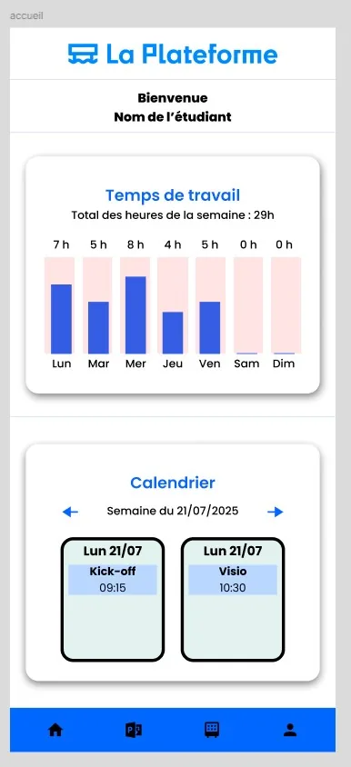
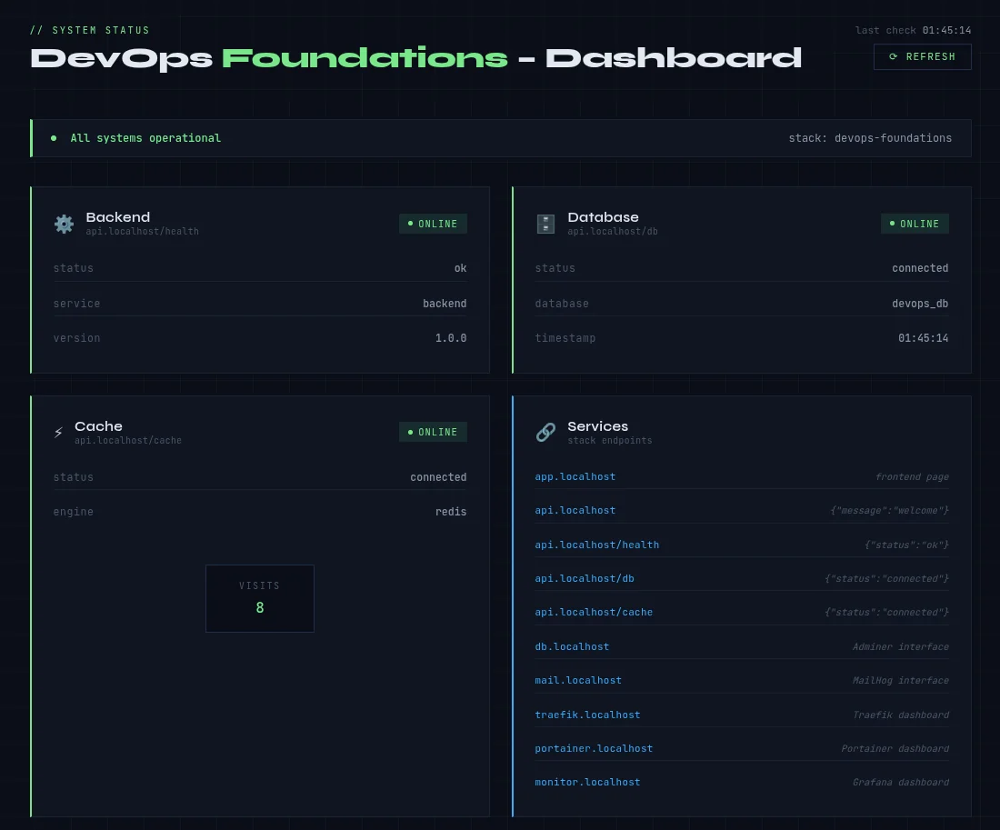
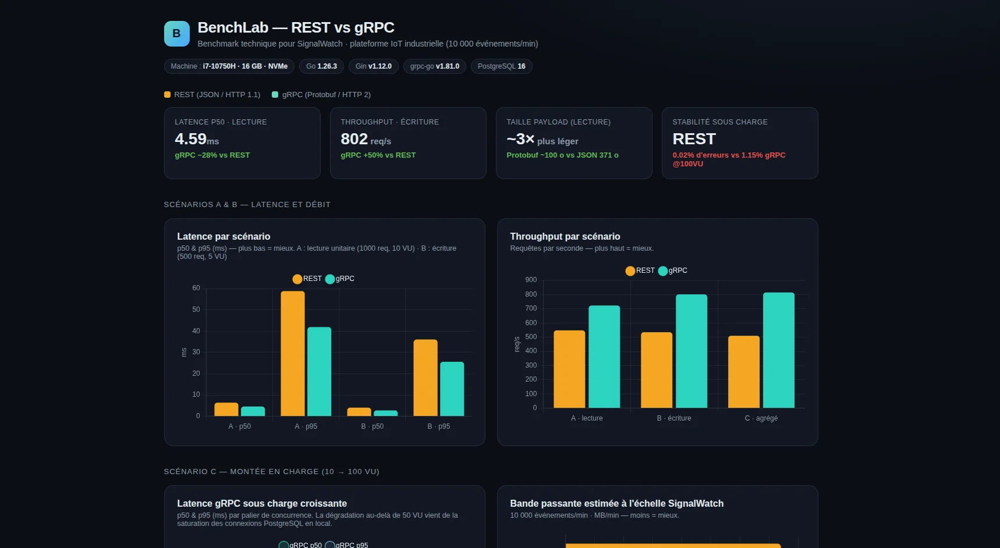
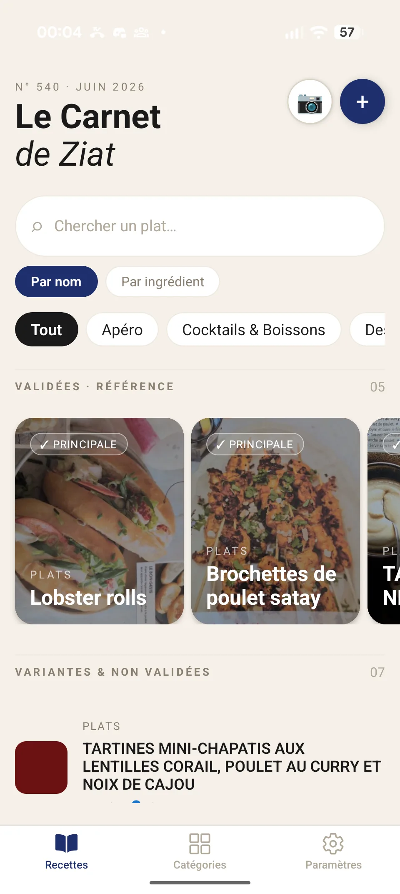
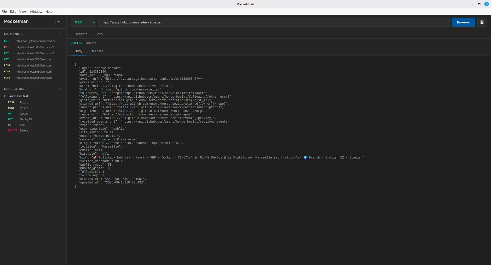

🎓SchoolTool
Intranet mobile pour La Plateforme : emplois du temps, notes, absences et infos de promotion, côté étudiants, enseignants et administration.
React NativePHPCodeIgniterMariaDBDocker
frontback
> Bonjour, je suis
Étudiant en Master Expert en Informatique & Systèmes d'Information, je conçois des applications full-stack robustes et évolutives — avec un soin particulier pour la qualité logicielle, les tests automatisés et le déploiement continu.
À propos
Étudiant en Master — Expert en Informatique et Systèmes d'Information à La Plateforme (Marseille), après un Bachelor Concepteur Développeur d'Applications. Je m'intéresse autant au front-end qu'au back-end, avec une attention portée à la qualité logicielle, aux architectures claires et à la fiabilité des déploiements.
Avant le code, j'ai dirigé une cuisine et géré un restaurant pendant près de dix ans — une reconversion qui m'a appris la rigueur, le travail sous pression et le sens du détail. J'apporte aujourd'hui cette même exigence au développement, toujours en quête d'un nouveau défi technique.
Formation
Master — Expert en Informatique et Systèmes d'Information (spé DevOps)
La Plateforme, Marseille — 2025 / 2027 · RNCP40573 (niveau 7)
Localisation
Région Sud (PACA)
Marseille · Var — mobilité régionale · télétravail ok
Disponibilité
Alternance — dès maintenant
Rythme 4 sem. entreprise / 1 sem. école · jusqu'à sept. 2027
Langues
Français (langue maternelle)
Anglais — TOEIC B2
Espagnol (intermédiaire)
Compétences
Front-end
Back-end
Base de données
DevOps & Qualité
Outils
Méthodes & gestion de projet
Projets

Intranet mobile pour La Plateforme : emplois du temps, notes, absences et infos de promotion, côté étudiants, enseignants et administration.

Stack DevOps prête pour la production : Docker, reverse-proxy Traefik en TLS, monitoring Grafana/Prometheus et workflow Git professionnel.

Benchmark REST vs gRPC sur des micro-services Go de monitoring de capteurs industriels (10 000 événements/min), avec tests de charge k6 et ghz.

Application mobile de gestion de recettes : scan photo avec extraction par IA (Gemini), validation et catégories, recherche par ingrédient, export PDF et sauvegarde Google Drive.

Testeur d'API REST léger façon Postman, en application desktop Electron : serveur Express local, collections et historique persistants, 100 % hors-ligne.
Contact
Une opportunité d'alternance, de stage ou un projet en tête ? Écris-moi, je réponds vite.